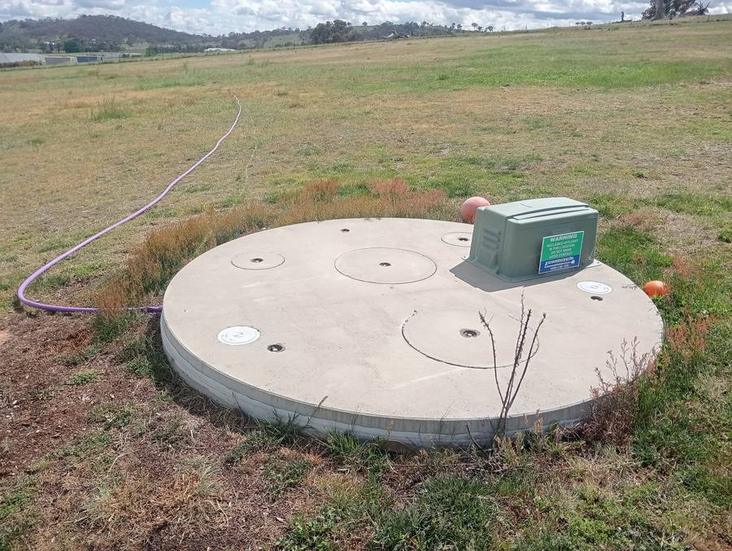
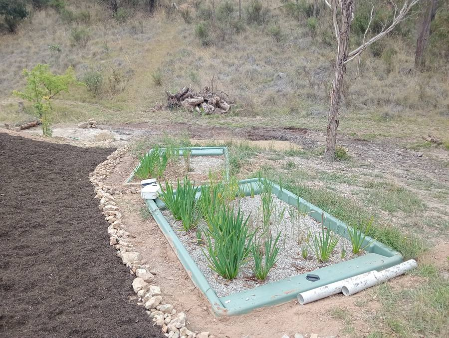
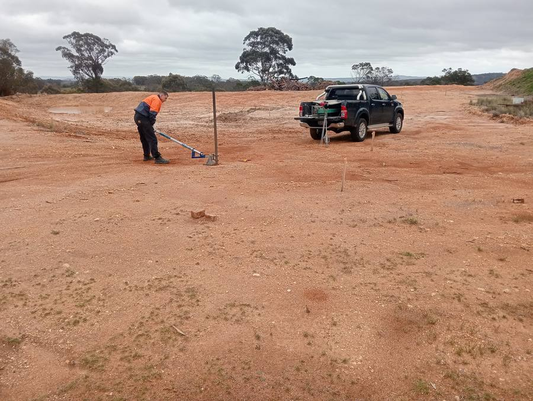
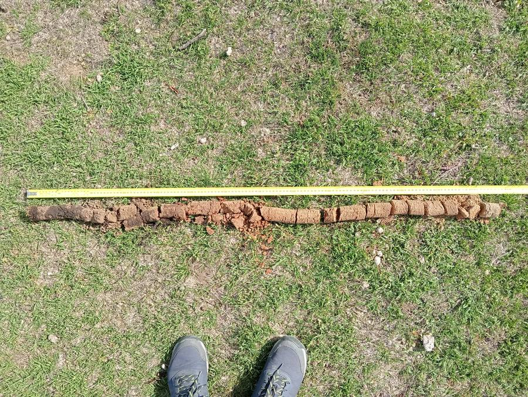
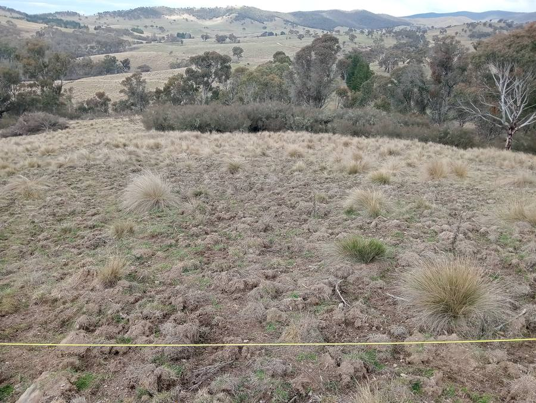
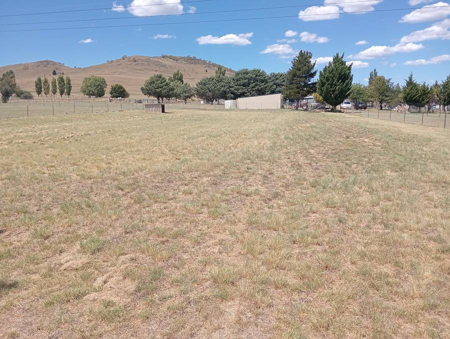

Council-ready OSSM & wastewater reports for unsewered properties
Soil On Site provides independent On-Site Sewage Management (OSSM) reports,
soil assessments, and DA-ready wastewater documentation for residential and
development projects across NSW and the ACT. We handle the technical detail —
you get a report that works with council first time.
An OSSM or wastewater assessment report is required in many common situations for
properties not connected to the reticulated sewer system.
New dwelling or subdivision
Building on unsewered land requires a council-approved OSSM report before your Development Application can proceed.
Septic system installation, upgrade, or replacement
A site assessment and wastewater report are required to determine the right system for your soil and site conditions.
DA or Section 68 application
Council requires a wastewater management report as part of the Development Application or Section 68 approval process under the Local Government Act.
Adding bedrooms or extending a dwelling
Increasing bedroom count affects the hydraulic load on your wastewater system. Council may require an updated OSSM assessment.
What We Provide
Our services
OSSM Reports
On-Site Sewage Management reports prepared to council specification — covering
the full assessment process from desktop study and site visit through to a clear
written report with system recommendations. DA-ready and compliant with NSW and
ACT requirements.
Soil & Site Assessments
On-site soil profile examination, borehole logging, soil texture and structure
assessment, and laboratory analysis where required. Results determine the most
appropriate wastewater system and irrigation area for your specific site conditions.
System Recommendations
Independent advice on the most suitable wastewater system — standard septic tanks,
AWTS (secondary treatment), greywater systems, composting toilets, and biological
filters. Based on your soil, site layout, and council requirements, not product preference.
Council-Ready Reporting
Reports formatted to meet NSW and ACT council submission requirements. We understand
the documentation councils want to see — reducing the chance of requests for further
information and delays to your approval.
Wastewater Report Updates
Need to respond to a council RFI or update an existing report following a design
change? We can review, supplement, or rewrite wastewater documentation to address
council requirements.
Environmental Assessments
Broader environmental assessment services are currently in development as we complete
the relevant accreditation process. We'll be expanding this service once accreditation
is in place.
Pending accreditation


Estimate Your Cost
How much will my report cost?
Use this calculator to get a rough indication of report costs based on your project.
It gives an estimate only — final pricing depends on your specific site and council requirements.
Not sure? Select "Other NSW / ACT area"
Estimated range
Select options above
Select your location and project type to see an estimate.
This calculator provides an estimate only and is not a fixed or legally binding quote.
Final pricing depends on site complexity, access requirements, location, and council specifications.
Contact us for a confirmed fixed-fee quote.
How It Works
From enquiry to council-ready report
A clear, methodical process from your first contact through to a finished report
you can submit to council with confidence.
1
Enquiry & Scoping
Contact us with your site address, council area, and project type.
We'll confirm we service your area and provide a fixed-fee quote.
2
Desktop Study
Before visiting site, we review council planning records, existing soil data,
topography, and any previous reports or approvals.
3
Site Visit & Fieldwork
We attend site to examine soil profiles, log boreholes, assess drainage,
and take samples for laboratory analysis.
4
Report & Delivery
A comprehensive wastewater assessment report with site data, soil results,
system recommendations, and a supporting layout — delivered council-ready.

Soil profile examination
Visual and tactile profiling at multiple depths to characterise texture, structure, and drainage behaviour.

Borehole logging & sampling
Boreholes drilled and logged to understand soil depth, layering, and groundwater conditions across the site.
Laboratory testing
Soil samples submitted for laboratory analysis to determine hydraulic conductivity and confirm field assessments where required.
Service Areas
NSW & ACT coverage
We service regional and rural properties across southern and central NSW and the ACT,
with a focus on areas where council OSSM requirements are most commonly encountered.
Queanbeyan-Palerang
Snowy Monaro
Eurobodalla
Bega Valley
Shoalhaven
Yass Valley
Goulburn Mulwaree
Hilltops
Wagga Wagga
ACT / Canberra region


Not sure whether we cover your property? Send us your site address and we'll confirm.
We're also happy to discuss projects in nearby areas on a case-by-case basis.
Not sure if we service your area?
Send us your site address and we'll confirm quickly. No obligation to proceed.
We're not a large generalist consultancy. We're wastewater engineers focused
specifically on OSSM and soil assessment — and that focus shows in the work.
01
Specialist wastewater focus
OSSM reports and soil assessments are our core work — not a side service. You get engineers who think about wastewater systems every day.
02
Independent advice
We don't sell or install systems. Recommendations are based on what your soil and site actually require — not on what a supplier wants specified.
03
Practical, council-ready reports
Reports are written for the people who need to approve them — clear structure, accurate data, appropriate recommendations, formatted to reduce RFIs.
04
Fixed-fee quoting
You know the cost before we start. No ambiguous hourly billing — a clear scope and fixed fee agreed upfront.
05
Local site knowledge
We work regularly in regional NSW and ACT and understand local soil types, topography, and what individual councils typically require.
06
Practical recommendations
System recommendations tailored to your specific site — not pulled from a generic template. Right system for your soil, slope, site area, and household.
Common Questions
Frequently asked questions
Our reports start from $1,500 for standard residential sites in nearby areas. Final pricing depends on your location, project complexity, soil and site conditions, and the system type being assessed. Use the calculator above for a rough estimate, or contact us for a confirmed fixed-fee quote.
Our standard turnaround is 10–15 business days from the site visit, subject to laboratory turnaround times if soil samples are required. If you have a firm submission deadline, let us know and we'll advise whether priority turnaround is available.
We typically need the property address or lot description, the council area, a brief description of the project (new build, upgrade, extension, etc.), the number of bedrooms, and any existing site plans or surveys. Previous reports or council correspondence are also useful.
You don't need to be present, but we do need safe and unobstructed access to the relevant areas of the site. If the property is gated or we need to be shown specific areas, it's helpful to be available on the day or arrange access in advance.
Poor or high-clay soils don't necessarily prevent approval — they change what system is recommended. We'll assess the conditions thoroughly and recommend a system appropriate for those constraints. Some sites require a secondary treatment system (AWTS) or alternative disposal method.
If council requests further information or amendments, we'll discuss what's needed and provide an updated response. Minor clarifications are usually included within the original scope; additional technical work outside the agreed scope may attract an additional fee, discussed with you first.
No. Soil On Site is an assessment and reporting consultancy. We don't install, supply, or maintain systems. This means our recommendations are genuinely independent — we have no financial interest in specifying any particular product or supplier. Installation is arranged separately with a licensed contractor.
We deliver the report ready for you or your builder or architect to submit with your DA or Section 68 application. We don't typically manage lodgement on your behalf, but if you need guidance on how to use the report in your submission, we're happy to assist.
There is no single fixed expiry period, but council may question reports that are several years old, particularly if the project design has changed significantly. If your property or plans have changed since an existing report was prepared, get advice on whether an update is needed before resubmitting.
We service Queanbeyan-Palerang, Snowy Monaro, Eurobodalla, Bega Valley, Shoalhaven, Yass Valley, Goulburn Mulwaree, Hilltops, and Wagga Wagga council areas, as well as the ACT. If you're unsure, send us your site address and we'll confirm quickly.
Get in Touch
Request a quote
Fill in the form and we'll come back to you with a fixed-fee quote — usually within
one business day. Include as much detail as you have about the site and project.